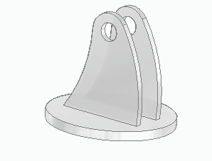
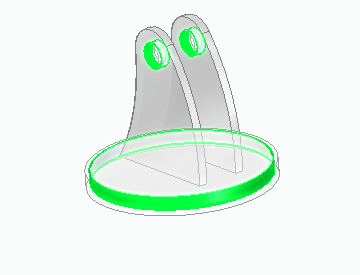
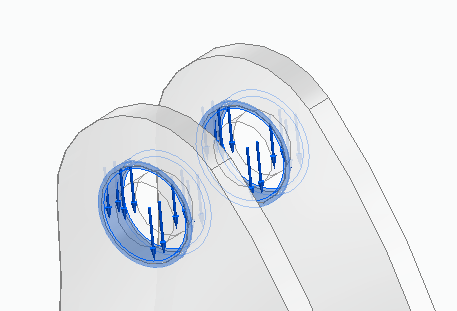
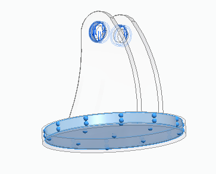
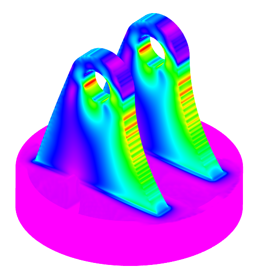

Generative Design example
The following Generative Design example shows the basic steps used to create a mass-optimized solution for the selected model. The resulting shape is based on the geometry selected as the design space, subject to physical loads, operational constraints, and manufacturing requirements that are applied to the study.
A swivel mount for a telescope will be optimized by removing 15 percent of the initial mass.

Refer to the Generative Design workflow.
-
To define the material for the mount, choose Generative Design tab→Material group→Material command.
Aluminum 1060 is the material used for the mount.
-
To initiate a generative study to optimize mass for your model, choose Generative Design tab→Generative Study group→Create Generative Study command
 .
. You can use this command to explore different optimization approaches on the same model.
-
If more than one body exists, select the Design Space command
 to specify which body to optimize. In this example there is only one body.
to specify which body to optimize. In this example there is only one body. -
Use the Preserve Region command
 to define the volume of material that will be excluded from the optimization. An
offset value for a face or feature defines the depth of the regions to be preserved.
Example:
to define the volume of material that will be excluded from the optimization. An
offset value for a face or feature defines the depth of the regions to be preserved.
Example:The offset value is 5 mm.

-
You can prevent overhanging material and remove internal voids using the Manufacturing Settings command . In this example there is no need for these settings.
-
Apply one or more physical forces, such as a Force load, Pressure load, or Torque load.
Example:A downward force of 60000 mN will be applied to the cylindrical holes in the mount. The offset value is 1 mm, however a larger volume was preserved with the Preserve Region command used earlier.

-
Apply operational constraints to faces or features that will not move, for example, using the Fixed constraint or Pinned constraint commands.
Example:In this example the bottom and side faces of the bottom plate are fixed.

-
Select the Generate command
 to optimize the part. In the Generate Study dialog box:
to optimize the part. In the Generate Study dialog box: -
Set the Study Quality to 20 on a scale of 1-300, with 300 being high.
-
Set the mass reduction to 15 percent.
For this study, the allowable stress is the same as the yield stress for Aluminum 1060.
-
-
The results are displayed along with the values used for the study. Select the Show Stress command to display the stresses.

How do I
Generative Design workflowLearn more
Generative Design overviewLook up more details
Setting Generative Design defaultsGenerative Design licenses